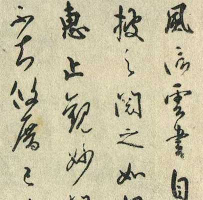
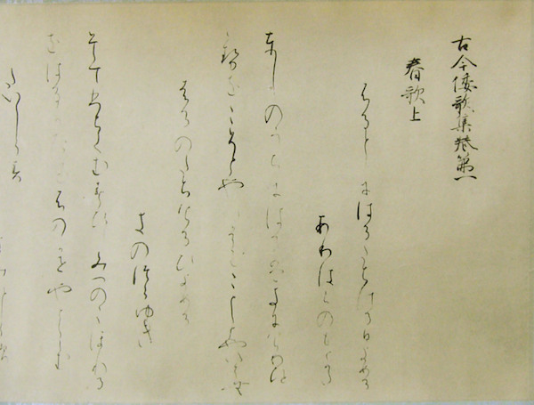
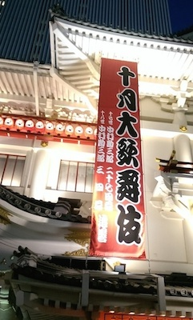
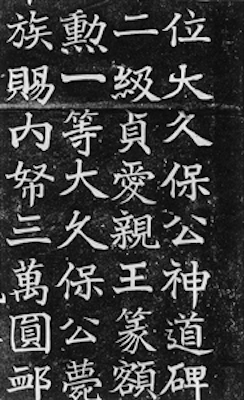
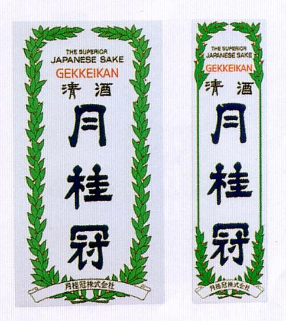
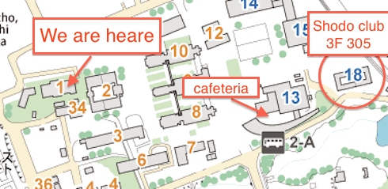

書道 -Shodo-
Japanese calligraphy
Japanese culture 4: Understanding Japan through Japanese traditional culture
by Kento Ito @Randyumi
About me
- I am ...
- 伊藤 健斗Ito Kento(@Randyumi)
- living at: Tokyo
- a web engineer(occupation)
- a graguate of Tohoku Univ. Arts and Letters, 2013

Today
Do you know about 書道shodo?
書道shodo is known as Japanese calligraphy.
- in your language:
- 书法/ 書法(Chinese), 서예(Korean), Thư Pháp(Vietnam).
Maybe...?
- Japanese students have exprerience in shosha(書写)?
- Chinese or Taiwanese stutdents have any knowlage?
- have you ever learned shodo?
- Other country students do not know well?
Today's agenda
- 書道shodo history
- example of works
- experience
Something like these

風信帖 / 空海(810年)
Fushinjo by Kukai (written in 810?)
Something like these

高野切第一種 / 伝・紀貫之
Koyagire vol.1 / Kinotsurayuki
History(Japan)
- 和様wa-yo(Japanese style) and 唐様kara-yo(Chinese style)
- Calligraphy originated in China
- originated in Chinese carigraphy
- introduced in Japan about 1300 years ago
- by 遣唐使kento-shi(missions to China)
- started from Chinese style 唐様kara-yo
History(Japan)
- Japanese style is formed
- 遣唐使kento-shi(missions to China) was abolished in 894
- Japanese original culture was developed
- Japanese style 和様wa-yo is developed too
History(Japan)
- Kana(Hiragana) is origin of Wayo
History(Japan)
Chinese characters accord to Wayo
御家流(O-ie-ryu) style character spread in Japanese people
- in 江戸時代Edo-period, about 300 - 100 years ago
- Edo goverment used 御家流Oieryu as an official form of characters
和様 the Japanese style
御家流Oieryu in today


History(Japan)
- 和様 was deprecated in Meiji period
- Edo period was ended and new goverment was established
- a lot of old culture was nagated
- character of 和様 was one of such an old culture
Current
- Today's shodo is based on 唐様kara-yo
- Today's shodo is an art
- little needs on practical use
- readability is not important
- beautiness is more important
Current
愛
love
Current

愛 / 上田桑鳩1951年
Ai / Sokyu Ueda(1951)
Current
愛 or 品
Current

大久保公神道碑 / 日下部鳴鶴
Okubo-Koshindo-hi / Mekaku Kusakabe
Current
familier work

Recent
Manga(comic)

Recent
Shodo performace

Recent
Shodo performance
How to write
- little point in writing characters
- Writing character BEAUTIFULLY is most important
- using BRUSH(筆), INC(墨), PAPER(紙)
- model works are prepared (for students submitted home work)
HaveFun!
- Tips
- too much ink will blured on paper
- brush must not be layed
- take care the tip of brush
Thank you for listening
More learning and enjoying shodo, go to shodo club

Twitter / @bokubokuyou
- This slides is uploaded in GitHub
- https://github.com/randyumi/misc